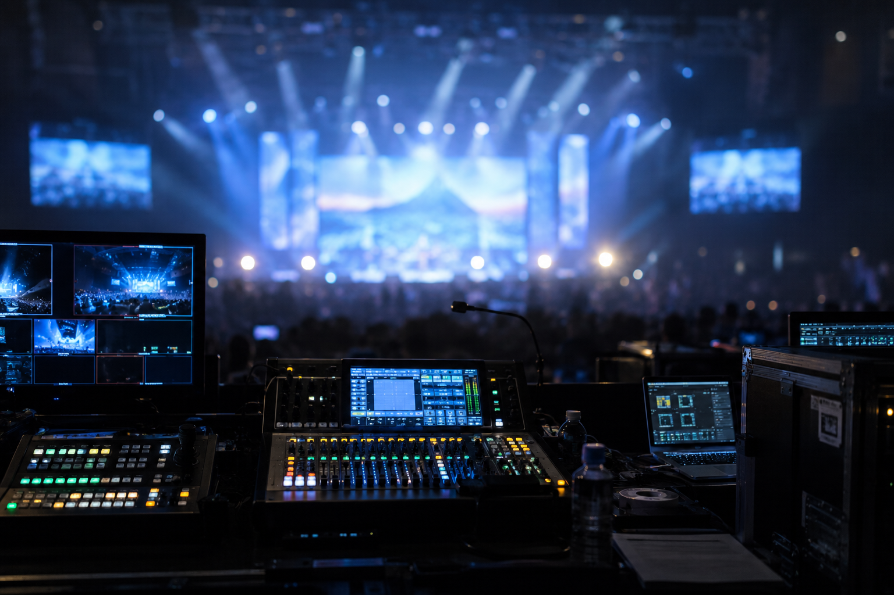
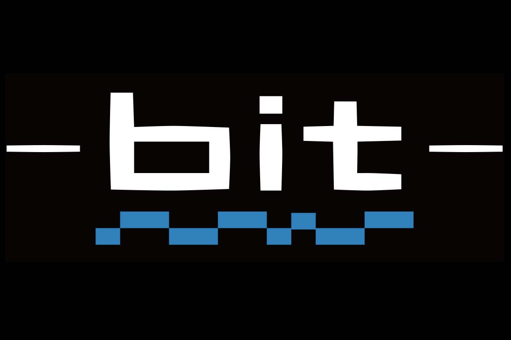

Technical Direction / Operation / Video Production
Creating Experiences
with Visual & Sound.
イベントの現場を、映像と音で支える。
システム設計・設営からオペレーション、撮影・映像制作まで、現場に合わせた技術で対応します。

01 / SYSTEM
Event AV System
映像・音響機器のシステム構築、設営、調整、オペレーション。
02 / OPERATION
Technical Operation
イベント当日の進行に合わせた映像・音響オペレーション。
03 / VIDEO
Video Production
撮影から編集まで。記録・配信・イベント用映像を制作します。
ABOUT bit
bitは、デジタル情報の最小単位を表す言葉です。
映像や音も、一つひとつの情報や技術が組み合わさることで、ひとつの体験を生み出します。
目に見える映像、耳に届く音、その瞬間の判断。
一つひとつの要素を丁寧に積み重ね、記憶に残る空間をつくっていきます。

Technical Director / Operator
現場経験をベースに、機材選定からシステム構築、当日のオペレーションまで一貫して対応します。
イベントごとに異なる目的や条件を理解し、最適なシステム構築と運用を考えることを大切にしています。